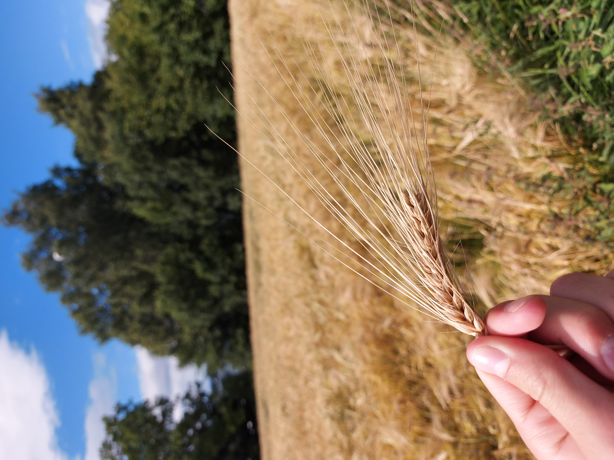

Denne gutten blir kalt korn

Denne gutten blir kalt korn gutten. Det skjønner du sikket hvis du ser på håret hans. Men denne gutten blir ikke altig kalt for korngutten.

han blir bare kalt for det når han har retta ut håret sitt. Denne gutten aka Korn gutten aka lille krølle aka Robin. denne gutten har faktisk bare masse krøller. På bildet over kan du se på sammenlingningen av et korn og korngutten.